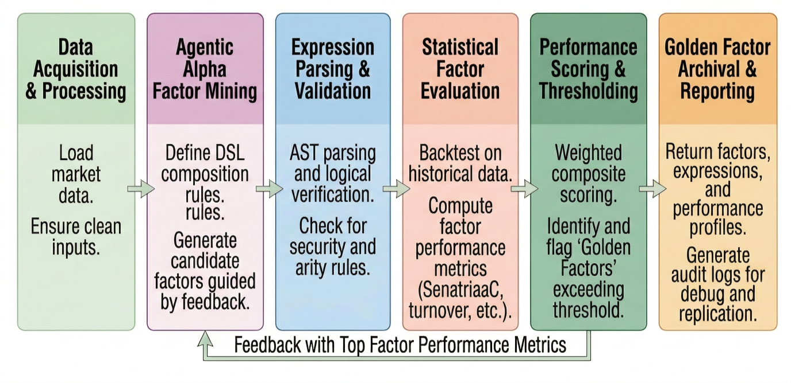
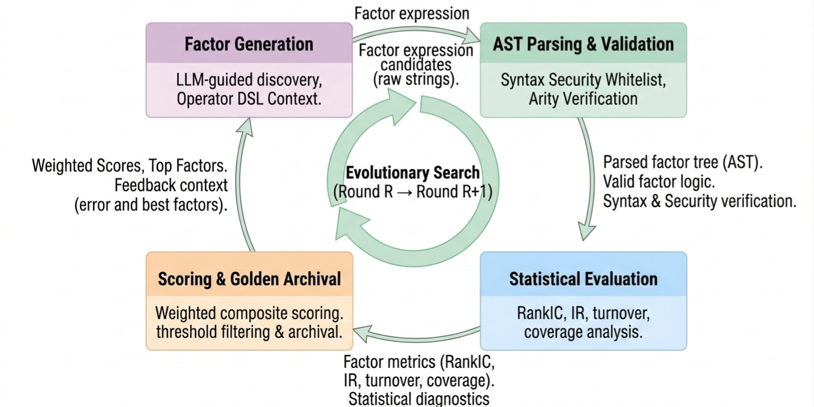
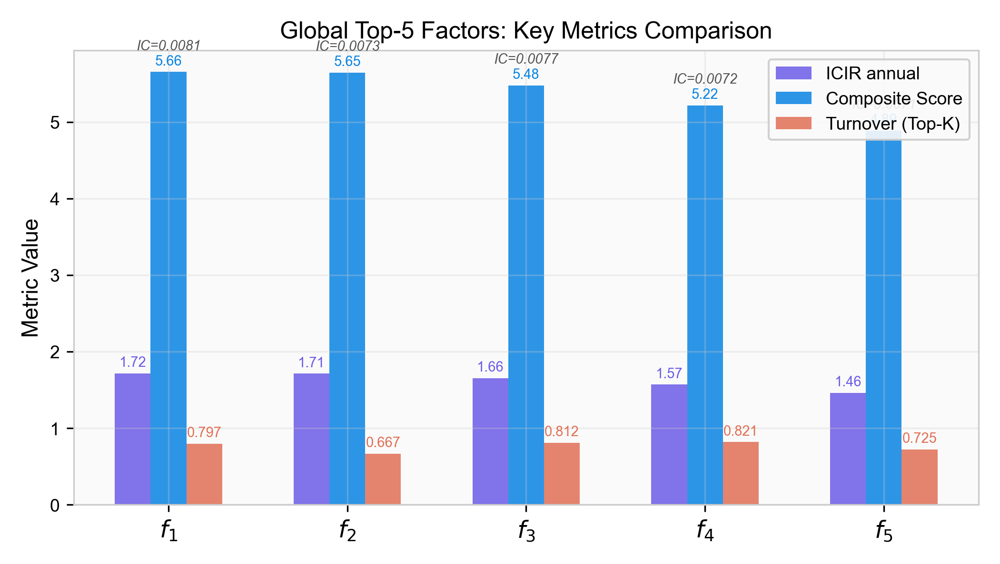
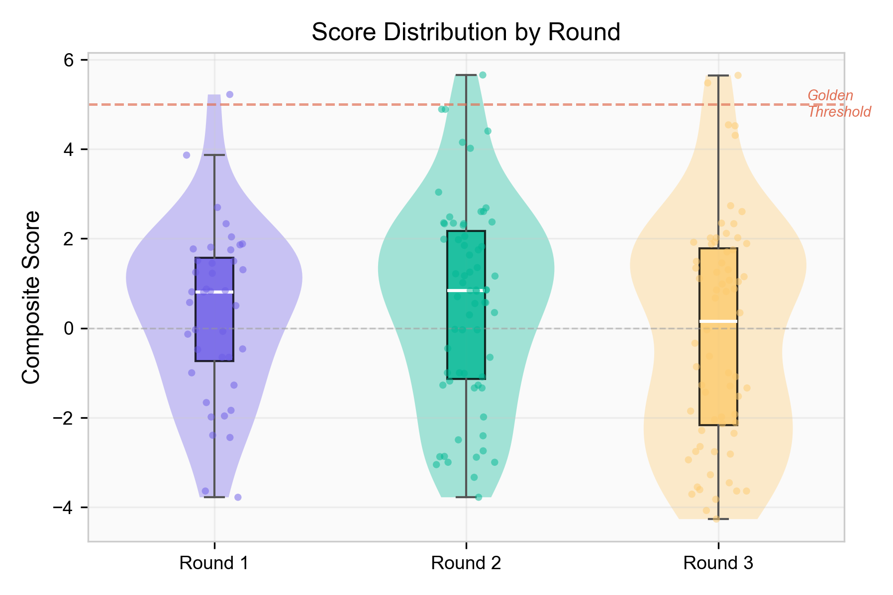
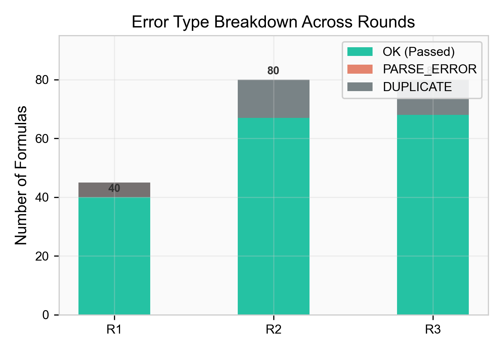
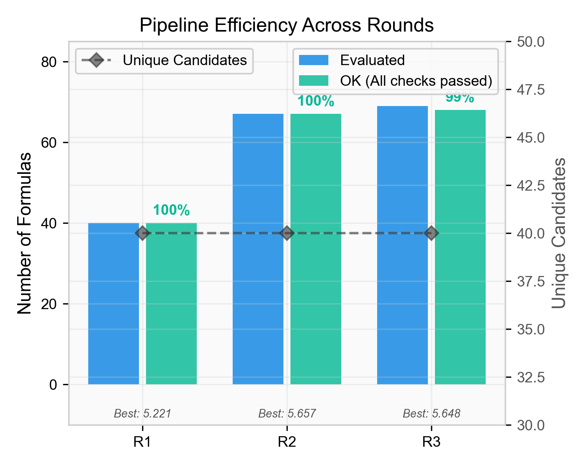

Project / Quantitative Research
Hubble: Safe Agentic Alpha Factor Discovery
Hubble is an LLM-driven factor mining framework for quantitative finance. It uses a constrained operator language, AST-based execution sandbox, deterministic statistical evaluation, and multi-round feedback to generate interpretable alpha factors with production-oriented safety controls.
Overview
Automated alpha discovery is difficult because symbolic factor spaces are combinatorial, financial data is noisy, and unconstrained LLM-generated code can be unsafe to execute. Hubble addresses this by treating the LLM as a constrained search engine rather than a free-form code generator. Candidate factors are generated as nested expressions in a domain-specific language, validated through a parser and sandbox, evaluated on cross-sectional equity data, and fed back into the next generation round as structured research context.
The project was developed as a research system at Celestial Quant Lab and UBC. The paper version evaluates the framework on 30 U.S. equities over 752 trading days, processing 120 unique candidates across three mining rounds with 100% computational stability and a best composite score of 0.827.
Research Pipeline
The system connects LLM-based hypothesis generation with a deterministic quantitative evaluation pipeline. A curated operator registry defines the legal expression space, including mathematical, time-series, cross-sectional, logic, and conditional operators. Generated expressions are parsed into symbolic trees, evaluated against OHLCV panel data, and scored using RankIC, annualized IC information ratio, hit ratio, turnover, coverage, and data drop diagnostics.
Instead of optimizing for a single headline metric, Hubble records each candidate as a reproducible artifact. The output directory stores run configuration, prompts, raw LLM responses, checkpoints, candidate records, top-k factors, golden factors, and error logs. This makes the research process auditable rather than dependent on one-off LLM outputs.
Safety Architecture
The core engineering contribution is the separation between language-model generation and executable research code. Hubble validates each candidate expression through a three-layer AST sandbox before execution. The sandbox restricts syntax to whitelisted AST nodes, enforces maximum tree depth and node count, checks function arity against the operator registry, rejects unknown variables, and blocks unsafe identifiers such as dunder names.
This design allows the LLM to explore factor ideas while keeping the runtime deterministic and recoverable. Append-only records and checkpoint files allow interrupted runs to resume without re-calling the model or losing completed evaluations.


Agentic Feedback Loop
Each mining round produces a batch of candidate expressions. Valid candidates are scored and ranked; invalid candidates are categorized as parse, security, semantic, duplicate, or evaluation failures. The next prompt receives top-performing factors and structured error summaries, allowing the model to refine its search space while avoiding repeated failure modes.

Results & Validation
The paper experiment processed 120 unique LLM-generated candidates and 240 total expression evaluations across three rounds. Of these, 180 expressions passed all validation and evaluation stages. The top factors achieved annualized information ratios above 1.0, while all top-five factors maintained full data coverage. Most importantly, the run recorded zero runtime crashes, which validates the sandbox-first architecture.
| Metric | Value | Why It Matters |
|---|---|---|
| Unique candidates | 120 | Measures LLM-driven symbolic search breadth. |
| Total evaluations | 240 | Includes multi-round feedback variants and repeated evaluation flow. |
| Valid evaluations | 180 | 75.0% of processed expressions passed validation and scoring. |
| Runtime crashes | 0 | Confirms deterministic execution safety under automated generation. |
| Best composite score | 0.827 | Highest score across RankIC, annualized IR, turnover, and data quality terms. |




Implementation Scope
- Designed the factor expression DSL and operator registry for interpretable symbolic alpha formulas.
- Implemented AST parsing, whitelist validation, arity checks, complexity limits, and safe expression execution.
- Built the RankIC, annualized ICIR, turnover, coverage, bucket-return, and composite scoring pipeline.
- Implemented multi-round LLM orchestration with prompt construction, feedback summaries, checkpoints, append-only storage, and structured run outputs.
Paper / Code
The project is currently maintained as a research repository. The code link points to the project repository; access depends on the repository visibility settings.